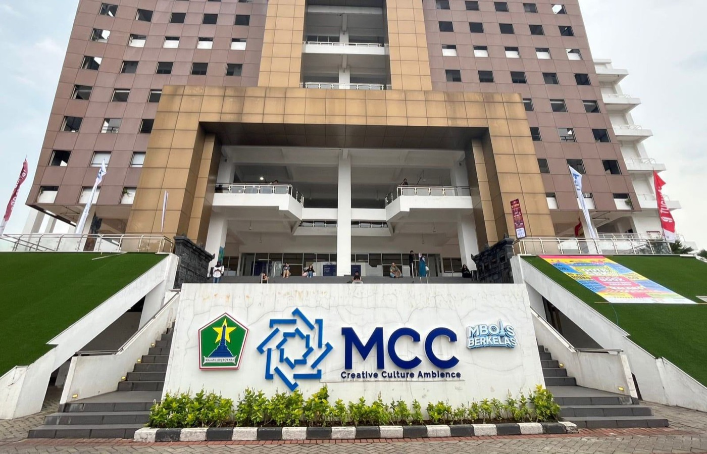
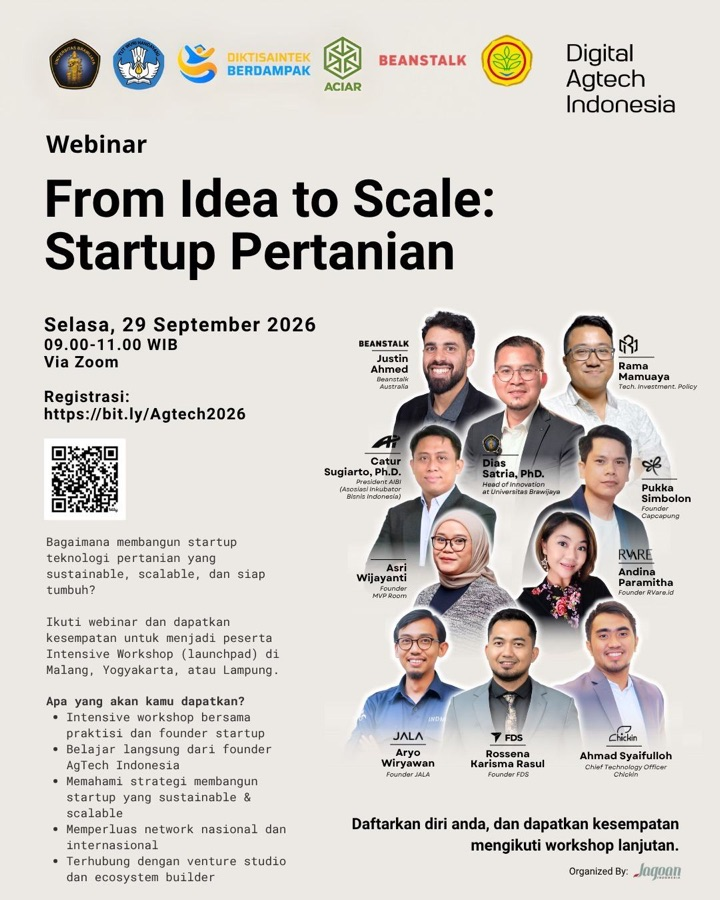

Malang Creative Center (MCC) Lantai 5
Malang, East Java, Indonesia
Jl. A. Yani No. 53, Blimbing, Kec. Blimbing, Kota Malang, Jawa Timur 65118. Get Directions
Organized by Interface Guild Indonesia
About
Grow a Sustainable AgTech Startup is a learning and networking event designed for aspiring entrepreneurs, young innovators, and startup teams working on agricultural solutions.
Through expert sessions, practical discussions, and ecosystem connections, participants will explore how to turn agricultural challenges into sustainable and scalable business opportunities.
The event brings together AgTech founders, practitioners, industry experts, and ecosystem builders to share insights, practical strategies, and real-world experiences.
Benefits
Gain practical insights from founders, practitioners, and industry experts.
Understand how to develop sustainable and scalable AgTech business models.
Apply practical frameworks and approaches to real agricultural challenges.
Connect with founders, innovators, ecosystem builders, and potential partners.
Explore opportunities to join further programs, workshops, and activities.
Build meaningful connections with organizations supporting agriculture.
Speakers
Learn from founders, practitioners, and experts shaping the future of AgTech.
Schedule
A full day of keynotes, practical sessions, discussions, and networking.
Meet fellow participants and connect with the AgTech community.
Welcome and introduction to the event.
Discover how real agricultural challenges can become meaningful startup opportunities.
Learn from practitioners about identifying users, validating problems, and developing relevant solutions.
Locations
Join us in person and connect with the local AgTech ecosystem.

Malang, East Java, Indonesia
Jl. A. Yani No. 53, Blimbing, Kec. Blimbing, Kota Malang, Jawa Timur 65118. Get DirectionsOrganizer
Join us in person and connect with the local AgTech ecosystem.
Organized by
Jagoan Indonesia supports young innovators and entrepreneurs through learning programs, business development initiatives, and ecosystem collaboration.
Through its programs and partnerships, Jagoan Indonesia helps young entrepreneurs develop their ideas, strengthen their businesses, and create meaningful impact across Indonesia.